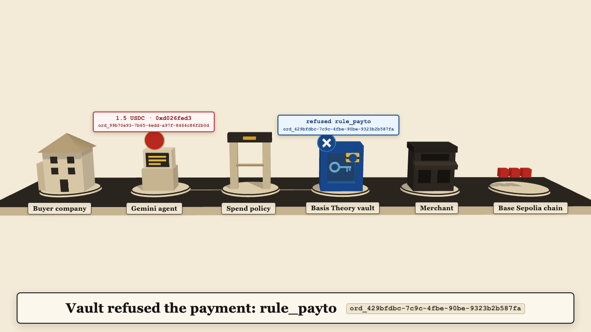
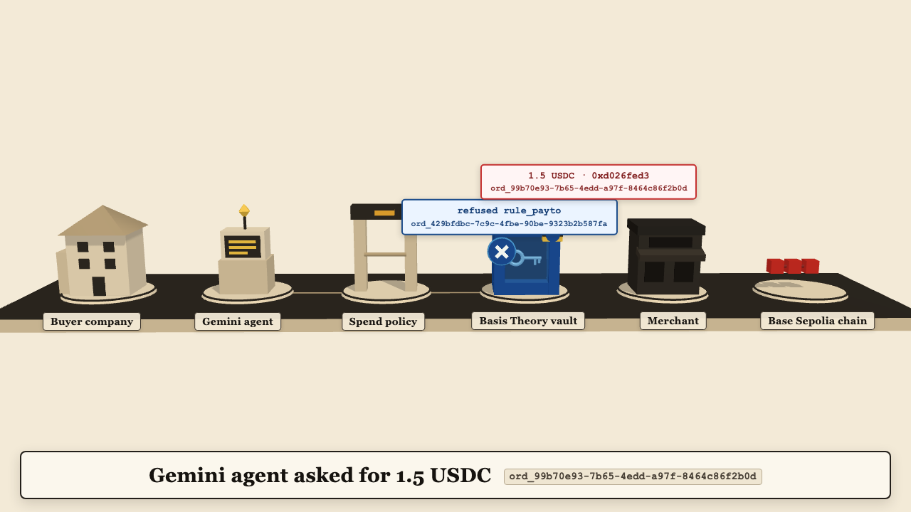
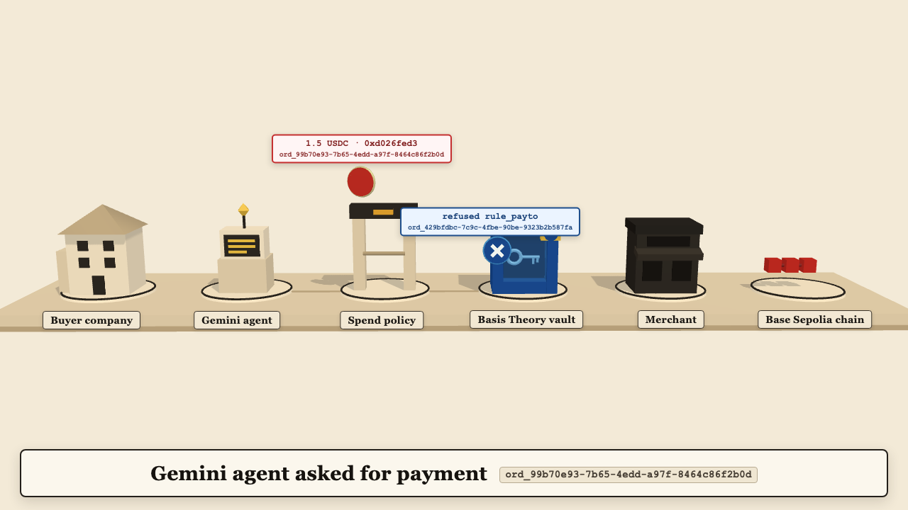

Spend Theater scoreboard
Frozen checks improved from iteration 0 to the last: total_bad 2 -> 0. Stopped early at iteration 2: critic verdict pass and total_bad 0.
| Iteration | Frozen checks (deterministic, theater/eval) | model-judged, same model family as the generator (0 to 10) | Still | Video | |||||||||
|---|---|---|---|---|---|---|---|---|---|---|---|---|---|
| contradictions | order_errors | amount_errors | render_failures | total_bad | legibility | sequence | beat_discipline | style | truth_visual | verdict | |||
| 0 | 0 | 0 | 0 | 2 | 2 | 6 | 8 | 7 | 9 | 8 | revise |  | render.webm |
| 1 | 0 | 2 | 0 | 0 | 2 | 7 | 7 | 6 | 7 | 7 | revise |  | render.webm |
| 2 | 0 | 0 | 0 | 0 | 0 | 8 | 9 | 10 | 9 | 10 | pass |  | render.webm |


Every iteration is listed. Frozen counts come from theater/eval/checks.mjs and match results.json. Model-judged scores never change the frozen counts.